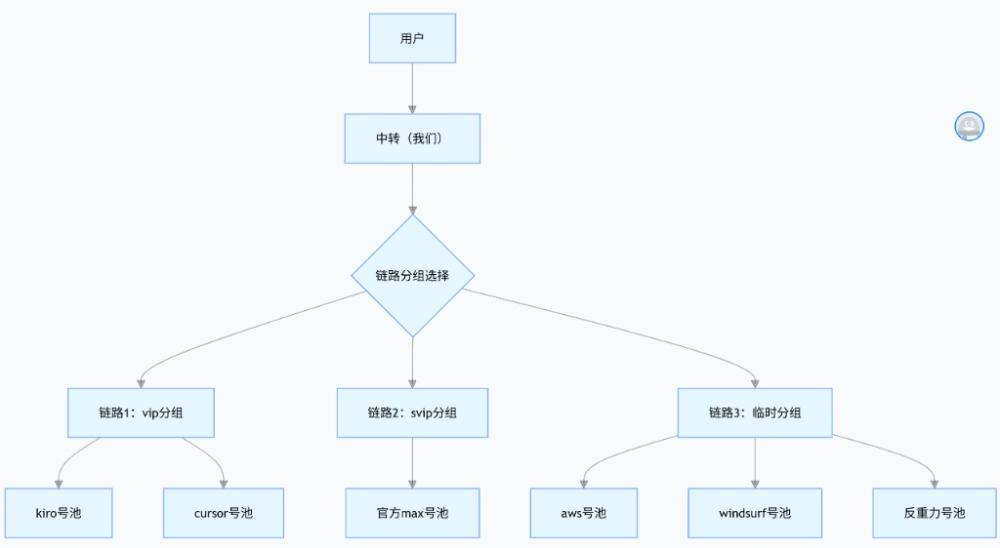
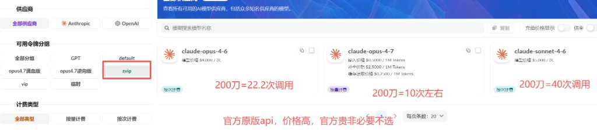
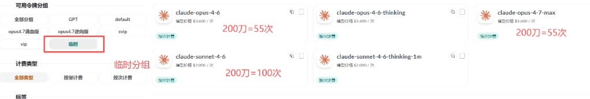
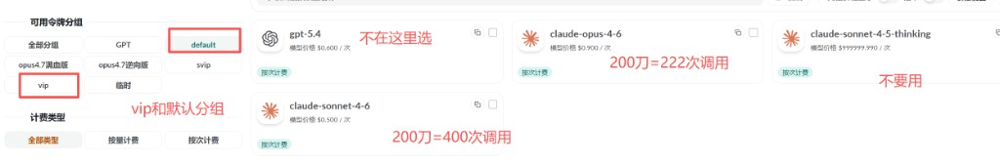
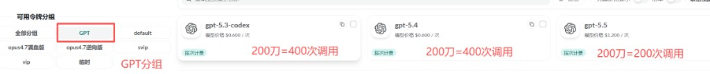

什么是中转站？
需要我自己有账号吗？冲我的账号吗？
答：无需注册 claude 账号，注册我们的网站账号即可快速获取 key 和续费，通过我们中转快速使用 Claude 和 GPT模型
会封号吗？
答：无封号风险，封号全额包赔，我们为你承担封号风险。
怎么计费？
按次计费：计的是「模型请求」次数，不是「聊天次数」；与单次 token 无关，只看次数、不看 token。不明白可以问 AI。
分组参考（按次 / 倍率）
| 分组 | 倍率 | Opus 次数 | Sonnet 次数 |
|---|---|---|---|
| VIP（kiro、cursor） | 1× | 222 | 400 |
| 临时（aws、wf、反重力） | 4× | 55 | 100 |
| SVIP（官方max订阅号池） | 10× | 22 | 40 |
GPT（按次）
| 模型档位 | 单价（按次） | 说明 |
|---|---|---|
| GPT 5.3 / 5.4 | 0.6 / 次 | 选 GPT 分组，以控制台为准 |
| GPT 5.5 | 1.2 / 次 | 同上 |
Claude Opus 4.7（按量计费）
| 版本 | 倍率 | 说明 |
|---|---|---|
| 逆向版 | 5× | 按量收费，WF 逆向 |
| 满血版 | 10× | 按量收费，官方 Max 号池 |
| 逆向按次版 | 10× | 按次收费，WF逆向号池，单次请求3.6 |

如何查看分组、价格、模型名称？
以控制台「模型 / 计价」页为准（地址以网站实际菜单为准）。对照方式如下：
- 分组在哪看：左侧 「可用令牌分组」 里点选（如 GPT、default、vip、临时、svip、opus4.7 等）。选中后，右侧只显示该分组下可用模型。
- 模型名称是哪一行：右侧每张 模型卡片最上面 的粗体字符串即为模型 ID（新建令牌、填 CC Switch / 客户端时要与这里一致）。
- 价格与怎么计费：卡片内 「模型价格」 一行即单价说明（常见为「$x.xx / 次」或按量文案）；卡片角上的 小标签 标明 按次计费 或 按量计费。左侧 「计费类型」 可筛选只看某一种计费。
下图为界面示意；红字批注为举例换算，一切以控制台当前标价与说明为准。部分「官方原版 / 高单价」渠道若无需要可不选。




一、注册账号、额度、令牌
注册你的账号，获取你的令牌，兑换激活码和续费，查看请求日志。
二、安装 CC-Switch（管理你的环境，自己懂配 JSON 可跳过不装）
图形化切换 key、统一配环境；OpenClaw、Cursor、Claude Code 等也常用它承载配置。需分步安装时点击下方进入（含 Windows、macOS 与 Node 前置说明）。
三、工具配置
先完成「一、」注册、额度、令牌，获取你的 key。URL：https://newapi.celink.top/，OpenAI 接口：https://newapi.celink.top/v1。
选择工具
四、json 配置说明、懂配json的看这里，新手请忽略这里！！！
下列为精简版 CC-Switch / 环境 JSON 示例：ANTHROPIC_AUTH_TOKEN 换成你的令牌，ANTHROPIC_MODEL 与控制台模型 ID 保持一致。
claude-opus-4-6 配置
{
"env": {
"ANTHROPIC_AUTH_TOKEN": "替换为你的令牌key，sk-XXX",
"ANTHROPIC_BASE_URL": "https://newapi.celink.top",
"ANTHROPIC_MODEL": "claude-opus-4-6"
},
"includeCoAuthoredBy": false,
"model": "Opus"
}Sonnet 同理（claude-sonnet-4-6）
{
"env": {
"ANTHROPIC_AUTH_TOKEN": "替换为你的令牌key，sk-XXX",
"ANTHROPIC_BASE_URL": "https://newapi.celink.top",
"ANTHROPIC_MODEL": "claude-sonnet-4-6"
},
"includeCoAuthoredBy": false,
"model": "Sonnet"
}如用
claude-opus-4-7 模型要选 opus4.7 分组的 key。claude-opus-4-7（令牌须为 opus4.7 分组）
{
"env": {
"ANTHROPIC_AUTH_TOKEN": "替换为你的令牌key，要用opus4.7模型分组下的key",
"ANTHROPIC_BASE_URL": "https://newapi.celink.top",
"ANTHROPIC_MODEL": "claude-opus-4-7"
},
"includeCoAuthoredBy": false,
"model": "Opus"
}使用 Claude 模型默认走 Claude 协议：
- 【协议】
anthropic-messages - 【URL】https://newapi.celink.top 或 https://newapi.celink.top/v1（可先都试；一般不带
/v1；仅当工具要求兼容 OpenAI 协议时再试带/v1） - 【模型】
claude-opus-4-7、claude-opus-4-6、claude-sonnet-4-6 - 【key】在令牌页按模型选好对应分组，复制 key（
sk-xxxx）
也可将下面整段复制发给 AI，请其按你的软件改配置。
使用 Claude 模型默认使用 Claude 协议：
【协议】：anthropic-messages
【URL】：https://newapi.celink.top 或 https://newapi.celink.top/v1（都试试，一般不带 /v1；兼容 OpenAI 协议才用带 /v1）
【模型】：
claude-opus-4-7
claude-opus-4-6
claude-sonnet-4-6
【key】令牌页选择模型对应分组，复制 key 为 sk-xxxx